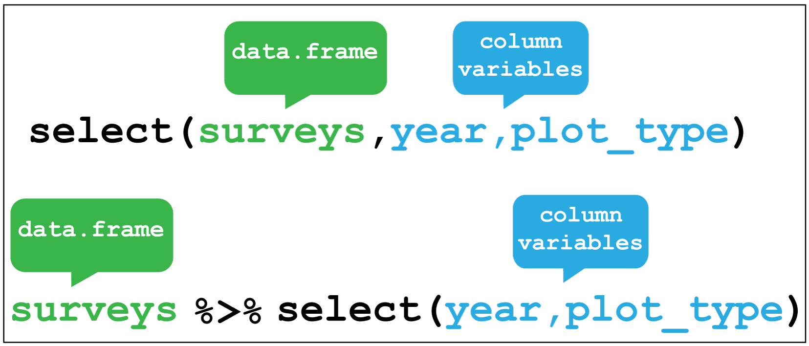
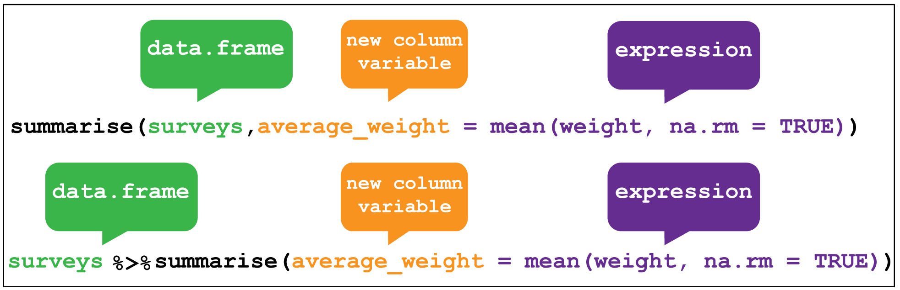

Chapter 4 dplyr verbs and piping
A core package in the tidyverse is dplyr for transforming data, which is often used in conjunction with the magrittr package that allows us to pipe multiple operations together.
The R4DS dplyr chapter is here and for magrittr here.
The figures in this chapter we made for use with an ecological dataset on rodent surveys, but the principles they illustrate are generic and show the use of each function with or without the use of a pipe.
From R4DS:
“All dplyr verbs work similarly:
1. The first argument is a data frame.
2. The subsequent arguments describe what to do with the data frame, using the variable names (without quotes).
3. The result is a new data frame.
Together these properties make it easy to chain together multiple simple steps to achieve a complex result."
4.1 Pipes
A pipe in R looks like this %>% and allows us to send the output of one operation into another. This saves time and space, and can make our code easier to read.
For example we can pipe the output of calling the dat object into the glimpse function like so:
dat %>% glimpse()## Observations: 7,702
## Variables: 8
## $ protein_accession <chr> "VATA_HUMAN_P38606", "RL35A_HUMAN_P18077",...
## $ protein_description <chr> "V-type proton ATPase catalytic subunit A ...
## $ control_1 <dbl> 0.8114, 0.3672, 2.9815, 0.1424, 1.0748, 0....
## $ control_2 <dbl> 0.8575, 0.3853, 4.6176, 0.2238, 0.9451, 0....
## $ control_3 <dbl> 1.0381, 0.4091, 2.8709, 0.1281, 0.8032, 0....
## $ treatment_1 <dbl> 0.6448, 0.4109, 7.1670, 0.1643, 0.7884, 0....
## $ treatment_2 <dbl> 0.7190, 0.4634, 2.0052, 0.2466, 0.8798, 1....
## $ treatment_3 <dbl> 0.4805, 0.3561, 0.8995, 0.1268, 0.7631, 0....This becomes even more useful when we combine pipes with dplyr functions.
4.2 Filter rows
The filter function enables us to filter the rows of a data frame according to a logical test (one that is TRUE or FALSE). Here it filters rows in the surveys data where the year variable is greater or equal to 1985.

Let’s try this with dat to filter the rows for proteins in control_1 and control_2 experiments where the observations are greater than 20:
dat %>% filter(control_1 > 20, control_2 > 20)## # A tibble: 2 x 8
## protein_accession protein_description control_1 control_2 control_3
## <chr> <chr> <dbl> <dbl> <dbl>
## 1 MYH9_HUMAN_P35579 Myosin-9 OS=Homo sapi~ 29.2 31.7 24.6
## 2 A0A087WWY3_HUMAN_A~ Filamin-A OS=Homo sap~ 31.9 27.8 31.3
## # ... with 3 more variables: treatment_1 <dbl>, treatment_2 <dbl>,
## # treatment_3 <dbl>Filtering is done with the following operators >,<,>=,<=,!= (not equal) and == for equal. Not the double equal sign.
4.3 Arrange rows
Arranging is similar to filter except that it changes the row order according to the columns in ascending order. If you provide more than one column name, each additional column will be used to break ties in the values of preceding columns.
Here we arrange the surveys data according to the record identification number.

To try that with dat let’s arrange the data according to control_1:
dat %>% arrange(control_1)## # A tibble: 7,702 x 8
## protein_accession protein_description control_1 control_2 control_3
## <chr> <chr> <dbl> <dbl> <dbl>
## 1 PAL4G_HUMAN_P0DN~ Peptidyl-prolyl cis-tr~ 0.001 0.0177 NA
## 2 E5RGV5_HUMAN_E5R~ Nucleolysin TIA-1 isof~ 0.0011 NA 0.093
## 3 E5RJP4_HUMAN_E5R~ Glutamine--fructose-6-~ 0.002 NA NA
## 4 I3L3U1_HUMAN_I3L~ Myosin light chain 4 O~ 0.00240 NA NA
## 5 ENPLL_HUMAN_Q58F~ Putative endoplasmin-l~ 0.0026 NA NA
## 6 K1C15_HUMAN_P190~ Keratin_ type I cytosk~ 0.00290 0.0615 0.122
## 7 B5ME44_HUMAN_B5M~ Outer dense fiber prot~ 0.00290 NA NA
## 8 PANK3_HUMAN_Q9H9~ Pantothenate kinase 3 ~ 0.0033 NA NA
## 9 RRS1_HUMAN_Q15050 Ribosome biogenesis re~ 0.0035 NA NA
## 10 NFL_HUMAN_P07196 Neurofilament light po~ 0.0035 0.315 0.564
## # ... with 7,692 more rows, and 3 more variables: treatment_1 <dbl>,
## # treatment_2 <dbl>, treatment_3 <dbl>4.4 Select columns
Selecting is the verb we use to select columns of interest in the data. Here we select only the year and plot_type columns and discard the rest.

Let’s use select with dat to drop the protein description and control experiments using negative indexing and keep everything else:
dat %>% select(-protein_description,-(control_1:control_3))## # A tibble: 7,702 x 4
## protein_accession treatment_1 treatment_2 treatment_3
## <chr> <dbl> <dbl> <dbl>
## 1 VATA_HUMAN_P38606 0.645 0.719 0.480
## 2 RL35A_HUMAN_P18077 0.411 0.463 0.356
## 3 MYH10_HUMAN_P35580 7.17 2.01 0.900
## 4 RHOG_HUMAN_P84095 0.164 0.247 0.127
## 5 PSA1_HUMAN_P25786 0.788 0.880 0.763
## 6 PRDX5_HUMAN_P30044 0.545 1.69 0.821
## 7 ACLY_HUMAN_P53396 4.67 5.01 3.57
## 8 VDAC2_HUMAN_P45880 1.01 1.04 0.904
## 9 LRC47_HUMAN_Q8N1G4 1.22 1.01 0.593
## 10 CH60_HUMAN_P10809 8.31 8.31 5.73
## # ... with 7,692 more rows4.5 Create new variables
Creating new variables uses the mutate verb. Here I am creating a new variable called rodent_type that will create a new column containing the type of rodent observed in each row.

Let’s create a new variable for dat called prot_id that use the str_extract function from the stringr package to take the last 6 characters of the protein_accession variable, the ".{6}$" part is called a regular expression, to keep just the UNIPROT id part of the string.
We’ll use select to drop the other variables except the protein accession afterwards via another pipe.
dat %>%
mutate(prot_id = str_extract(protein_accession,".{6}$")) %>%
select(protein_accession, prot_id)## # A tibble: 7,702 x 2
## protein_accession prot_id
## <chr> <chr>
## 1 VATA_HUMAN_P38606 P38606
## 2 RL35A_HUMAN_P18077 P18077
## 3 MYH10_HUMAN_P35580 P35580
## 4 RHOG_HUMAN_P84095 P84095
## 5 PSA1_HUMAN_P25786 P25786
## 6 PRDX5_HUMAN_P30044 P30044
## 7 ACLY_HUMAN_P53396 P53396
## 8 VDAC2_HUMAN_P45880 P45880
## 9 LRC47_HUMAN_Q8N1G4 Q8N1G4
## 10 CH60_HUMAN_P10809 P10809
## # ... with 7,692 more rows4.6 Create grouped summaries
The last key verb is summarise which collapses a data frame into a single row.
For example, we could use it to find the average weight of all the animals surveyed in the surveys data using mean(). (Here the na.rm = TRUE argument is given to remove missing values from the data, otherwise R would return NA when trying to average.)

summarise is most useful when paired with group_by which defines the variables upon which we operate upon.
Here if we group by species_id and rodent_type together and then used summarise without any arguments we return these two variables only.

We’ll use the mpg dataset again to illustrate a grouped summary. Here I’ll group according fuel type fl, c = compressed natural gas ,d = diesel, e = ethanol, p = premium and r = regular. Then using summarise to calculate the mean highway (hwy) miles per gallon, and the mean urban (cty) miles per gallon,the tables is collapsed from 234 to five rows, one for each fuel type and two columns for the mean mpg;s. This illustrates how grouped summaries provide a very concise way of exploring data as we can immediately see the relative fuel efficiences of each fuel type under two conditions.
# fl is fuel type. c = compressed natural gas ,d = diesel,
# e = ethanol, p = premium and r = regular.
mpg %>%
group_by(fl) %>%
# Create summaries mean_hwy and mean_cty using the mean function,
# dropping any missing variables.
summarise(mean_hwy = mean(hwy, na.rm = T), mean_cty = mean(cty, na.rm = T))## # A tibble: 5 x 3
## fl mean_hwy mean_cty
## <chr> <dbl> <dbl>
## 1 c 36 24
## 2 d 33.6 25.6
## 3 e 13.2 9.75
## 4 p 25.2 17.4
## 5 r 23.0 16.7We’ll use dplyr and pipes in Chapter 5.